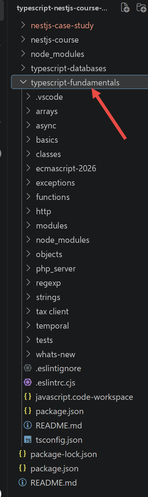

2. Configuración del entorno de trabajo
El documento original (2019) explicaba en detalle cómo instalar [Laragon], [Netbeans] y [Visual Studio Code] en Windows 10, con numerosas capturas de pantalla que ilustraban la configuración de PATH. En 2026, la instalación es mucho más sencilla: usaremos las siguientes herramientas.
- [Visual Studio Code] para escribir el código TypeScript;
- [Node.js], versión 26 o posterior—es la versión que dejó disponible, sin ninguna opción especial, el objeto [Temporal] presentado en el último capítulo de este documento;
- [TypeScript], versión 6;
- [tsx], una herramienta que ejecuta directamente un archivo .ts sin un paso previo de compilación; es la que usaremos para todos los scripts de este documento;
- [npm] (Node Package Manager), incluido con Node.js, para instalar las bibliotecas que necesitaremos;
2.1. Verificación de las herramientas instaladas
Una vez instalados Node.js y Visual Studio Code, abra una terminal (ya sea dentro de VSCode o fuera de él) y verifique las versiones instaladas:
Resultado (la versión exacta puede variar; se recomienda 26.x o superior para este curso):
Resultado de la ejecución:
2.2. Configuración del proyecto de VSCode
La carpeta de código de este curso es la siguiente:

Esta carpeta corresponde a la estructura de directorios completa de los scripts (typescript-nestjs-course-scripts/) presentada en la introducción de este documento, que usted ha descargado. Abra la subcarpeta typescript-fundamentals/ en VSCode: allí se encuentran los scripts de los primeros capítulos de este curso. Ya contiene, en su raíz, los dos archivos package.json y tsconfig.json; veámoslos.
2.2.1. El archivo package.json
Este archivo enumera las dependencias del proyecto. También especifica "type": "module", para que Node.js trate de forma nativa nuestros archivos como módulos de ECMAScript (con import/export), sin necesidad de una herramienta intermedia como ocurría en 2019 con el paquete esm.
{
"type": "module",
"scripts": {
"check": "tsc --noEmit"
},
"devDependencies": {
"eslint": "^8.57.0",
"@typescript-eslint/eslint-plugin": "^7.18.0",
"@typescript-eslint/parser": "^7.18.0",
"typescript": "^6.0.3",
"tsx": "^4.19.0",
"@types/node": "^22.7.0"
},
"dependencies": {
"axios": "^1.7.0",
"moment": "^2.30.0",
"qs": "^6.12.0",
"sprintf-js": "^1.1.3"
}
}
2.2.2. El archivo tsconfig.json
Este archivo configura el compilador de TypeScript. El modo estricto está habilitado: es la configuración recomendada, ya que permite a TypeScript detectar el mayor número posible de errores durante la compilación.
{
"compilerOptions": {
"target": "ES2023",
"lib": ["ESNext"],
"module": "NodeNext",
"moduleResolution": "NodeNext",
"esModuleInterop": true,
"strict": true,
"types": ["node"],
"noEmit": true
},
"include": ["**/*.ts"]
}
Si aún no ha descargado la estructura de directorios, o si necesita reinstalar sus dependencias, aquí está el recordatorio del único comando que debe ejecutarse (una sola vez) en el directorio raíz; instalará todos los módulos de Node.js necesarios para todos los scripts del curso:
Los siguientes comandos se ingresan en una terminal de VSCode con el directorio establecido en [typescript-fundamentals].

2.3. Primer script
Creemos un archivo llamado tests/test-01.ts:
Ejecútelo desde la terminal, en el directorio raíz del proyecto:
Resultado de la ejecución:
2.4. Segundo script: verificación de tipos
Creemos un segundo archivo, tests/test-02.ts, con una variable tipada explícitamente:
Resultado de la ejecución:
Ahora intentemos asignar una cadena a esta variable declarada como número:
Sin siquiera ejecutar el script, VSCode resalta de inmediato la línea en rojo y el comando de verificación de tipos falla:
Resultado de la ejecución:
Esta es la ventaja clave de TypeScript sobre JavaScript: toda una categoría de errores (mezclas accidentales de tipos) se detecta antes de la ejecución, directamente en el editor, en lugar de descubrirse cuando el código falla en producción.
2.5. ESLint
[ESLint] es una herramienta que verifica que el código respete un conjunto de reglas de estilo y buenas prácticas (variables no utilizadas, comparaciones sospechosas, etc.). El archivo de configuración .eslintrc.cjs (la extensión .cjs, y no .js, es necesaria porque package.json declara "type": "module") usa el analizador @typescript-eslint, que entiende la sintaxis de TypeScript (tipos, interfaces, campos privados #x...):
module.exports = {
root: true,
env: { node: true, es2024: true },
extends: ["eslint:recommended", "plugin:@typescript-eslint/recommended"],
parser: "@typescript-eslint/parser",
plugins: ["@typescript-eslint"],
parserOptions: { ecmaVersion: "latest", sourceType: "module" }
};
Luego analizamos todo el proyecto con:
2.6. ESLint en VSCode
La extensión de VSCode, llamada [ESLint] (que se instala desde la pestaña Extensiones), muestra las advertencias de ESLint directamente en el editor en tiempo real, sin tener que ejecutar el comando manualmente cada vez.
Ya contamos con un entorno de trabajo completo. El siguiente capítulo trata los fundamentos del lenguaje TypeScript.